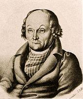

|
|
颂主新歌 |
|
1 In memory of the Savior's love, 2 By faith we take the bread of life 3 In faith and memory here we sing |
1.缅怀救主无穷慈爱，我众虔守主餐， |
|
https://www.mred365.cn/szxg/7555.html
In Memory of the Savior 's Love
|
|
|
|
|


piano 颂主新歌 552 缅怀主爱 - In Memory Of The Savior's Love - Song Lyrics with Orchestral backing music. https://youtu.be/QfCs_v0SSZs
| Text: | In Memory of the Savior 's Love |
| Author: | Thomas Cotterill |
| Tune: | NAOMI |
| Arranger: | Lowell Mason |
| Composer: | Hans G. Nägeli, d. 1836 |
| Short Name: | Thomas Cotterill |
| Full Name: | Cotterill, Thomas, 1779-1823 |
| Birth Year: | 1779 |
| Death Year: | 1823 |
Thomas Cotterill (b. Cannock, Staffordshire, England, 1779; d. Sheffield, Yorkshire, England, 1823) studied at St. John's College, Cambridge, England, and became an Anglican clergyman. A central figure in the dispute about the propriety of singing hymns, Cotterill published a popular collection of hymns (including many of his own as well as alterations of other hymns), Selection of Psalms and Hymns in 1810. But when he tried to introduce a later edition of this book in Sheffield in 1819, his congregation protested. Many believed strongly that the Church of England should maintain its tradition of exclusive psalm singing. In a church court the Archbishop of York and Cotterill reached a compromise: the later edition of Selection was withdrawn, and Cotterill was invited to submit a new edition for the archbishop's approval. The new edition was published in 1820 and approved as the first hymnal for the Anglican church of that region. Cotterill's suppressed book, however, set the pattern for Anglican hymnals for the next generation, and many of its hymns are still found in modern hymnals.
Bert Polman
Tune Information
| Title: | NAOMI (Nägeli) |
| Composer (attributed to): | Hans G. Nägeli (1836) |
| Arranger: | Lowell Mason |
| Meter: | 8.6.8.6 |
| Incipit: | 33354 32343 36654 |
| Key: | D Major |
| Copyright: | Public Domain |
| Short Name: | Hans G. Nägeli |
| Full Name: | Nägeli, Hans George, 1773-1836 |
| Birth Year: | 1773 |
| Death Year: | 1836 |
Johann G. Nageli (b. Wetzikon, near Zurich, Switzerland, 1773; d. Wetzikon, 1836)

was an influential music educator who lectured throughout Germany and France. Influenced by Johann Pestalozzi, he published his theories of music education in Gangbildungslehre (1810), a book that made a strong impact on Lowell Mason. Nageli composed mainly" choral works, including settings of Goethe's poetry. He received his early instruction from his father, then in Zurich, where he concentrated on the music of. S. Bach. In Zurich, he also established a lending library and a publishing house, which published first editions of Beethoven’s piano sonatas and music by Bach, Handel, and Frescobaldi.
Bert Polman
"IN MEMORY OF THE SAVIOR’S LOVE" hymnstudiesblog
"For as often as ye eat this bread and drink this cup, ye do show the Lord’s death" (1 Cor. 11.26)
INTRO.:
A hymn that talks about eating the bread and drinking the cup to remember the Lord’s death is "In Memory Of The Savior’s Love" (#181 in Hymns for Worship Revised). The text is attributed to Thomas Cotterill, who was born at Cannock in Staffordshire, England, on Dec. 4, 1779, and educated at the Free School in Birmingham, and at St. John’s College, Cambridge. Becoming a minister in the Church of England in 1803, he served first at Tutbury. This hymn is made up of portions of his six-stanza "Blest with the presence of their God," which first appeared in Jonathan Stubb’s 1805 Uttoexeter Selection of Psalms and Hymns for Public and Private Use. In 1808 Cotterill moved to Lane End in Staffordshire, where in 1810 he prepared the first edition of his own Selection of Psalms and Hymns.
In those days, only the hymns in the approved Psalters were used in the Anglican churches, but Cotterill attempted to introduce his collection of songs in an effort to promote more congregational singing. After he moved to St. Paul’s in Sheffield in 1817, where he served until his death, a legal controversy arose in 1819 when those in the congregation who opposed hymn singing sought to have his hymnbook prohibited. The Archbishop of York persuaded him to withdraw it and prepare another collection, the ninth edition, in 1820. Somebody must have been using the first eight, but the final one was officially accepted, and thus became the first hymnbook so recognized for use in the English church. Cotterill died in Sheffield on Dec. 29, 1823.
A three-stanza version of Cotterill’s hymn (using stanzas three, five, and six) first appeared in 1835 in Whittinham’s Collection. The tune (Winchester Old) seems to be based on a melody from Christopher Tye’s setting for the eighth chapter of "The Acts of the Apostles" in 1553. The arrangement of it as a hymn tune is credited to George Kirbye (c. 1560-1634). It is first found in The Whole Book of Psalms, a psalter published in 1592 by Thomas Este (c. 1540-1608). His name is also spelled Est, East, and Easte, and he was a licensed printer and well-known music publisher in London, England. Sometimes he is credited with the composition. The present form dates to the 1861 Hymns Ancient and Modern.
Among hymnbooks published by members of the Lord’s church during the twentieth century for use in churches of Christ, the song appeared in 1925 edition of the 1921 Great Songs of the Church (No. 1) and the 1937 Great Songs of the Church No. 2 both edited by E. L. Jorgenson; and the 1959 Majestic Hymnal No. 2 and the 1978 Hymns of Praise both edited by Reuel Lemmons; and the 1965 Great Christian Hymnal No. 2 edited by Tillit S. Teddlie. Today it may be found in the 1971 Songs of the Church, the 1990 Songs of the Church 21st C. Ed., and the 1994 Songs of Faith and Praise all edited by Alton H. Howard; the 1986 Great Songs Revised edited by Forrest M. McCann; and the 1992 Praise for the Lord edited by John P. Wiegand; in addition to Hymns for Worship. All our books use the three stanza version.
This hymn helps center our minds on the purpose for which we eat the Lord’s supper.
I. Stanza 1 points out that the Lord’s supper is in memory of the Savior’s love.
"In memory of the Savior’s love We keep the sacred feast,
Where every humble, contrite heart Is made a welcome guest."
A. When Jesus instituted the Lord’s supper, He told us that we are to partake
"in remembrance" or in memory of Him: 1 Cor. 11.23-25
B. We remember His love because He showed His love for us in laying down His
life for us: 1 Jn. 3.16
C. But we must also make sure that we come to this feast with a humble,
contrite heart because we must examine ourselves to eat in a worthy manner: 1
Cor. 11.27-29
II. Stanza 2 points out that both the bread and the cup are special tokens of
Christ’s love
"By faith we take the bread of life With which our souls are fed,
The cup in token of His blood That was for sinners shed."
A. Because the bread and the cup symbolize something spiritual, when we eat we
are walking by faith, not by sight: 2 Cor. 5.7
B. The bread represents the body of Jesus as it hung on the cross: Matt. 26.26
C. The cup represents His blood which was shed for the remission of our sins:
Matt. 26.27-28
III. Stanza 3 points out that in eating the Lord’s supper we are praising God
"Here let our ransomed powers unite His honored name to raise;
Let grateful joy fill every mind, And every voice be praise."
A. It is by the blood of Christ that our souls have been ransomed: Matt. 20.28
B. Therefore, it should be our privilege to raise honor to the name of Him in
whom salvation is found: Acts 4.12
C. Therefore, when we eat the Lord’s supper we are praising the Lord by
identifying with His death for our sins: Rom. 5.8
IV. Stanza 4 points out that the the Lord’s supper is supposed to be a means of
uniting God’s people
"One fold, one faith, one hope, one Lord, One God alone we know;
Brethren we are; let every heart With kind affections glow."
A. All true Christians are part of one fold: Jn. 10.16
B. This unity is gained by accepting only one faith, one hope, one Lord, and
one God: Eph. 4.4-6
C. Those who accept the oneness of God’s plan are all brethren: Matt. 23.8
V. Stanza 5 points out that eating the Lord’s supper points us toward the
heavenly feast
"Beneath His banner thus we sing The wonders of His love;
And here anticipate by faith The heavenly feast above."
A. To stand "beneath His banner" simply means to identify ourselves with Christ
and His love for us by participting in this memorial feast: S. of S. 2.4
B. Thus, as we eat the bread and drink the cup, we are having spiritual
communion with His body and His blood in the Lord’s supper: 1 Cor. 10.16
C. This, in turn, symbolizes the eternal communion that we can have with Christ
in His marriage feast: Rev. 19.7-9
CONCL.:
Several alterations appear in the version of this hymn used in our books. The
original line first line read, "In memory of His dying love." Stanza 2 began,
"Symbolic of His broken flesh, We take the broken bread." Stanza 3 began "Under
His banner" and read "And so" instead of "And here." Other hymns have been used
with this same tune. A stanza from one of them, written by Charles Wesley, can
be adapted as a fitting close to this hymn.
"Christ, through Himself, we then shall know, If He in us will shine,
And sound with all the saints below The depths of love divine."
On the first day of each week, we need to think about these things as we partake
of the Lord’s supper "In Memory Of The Savior’s Love."
https://hymnstudiesblog.wordpress.com/2008/07/19/quotin-memory-of-the-savior039s-lovequot/